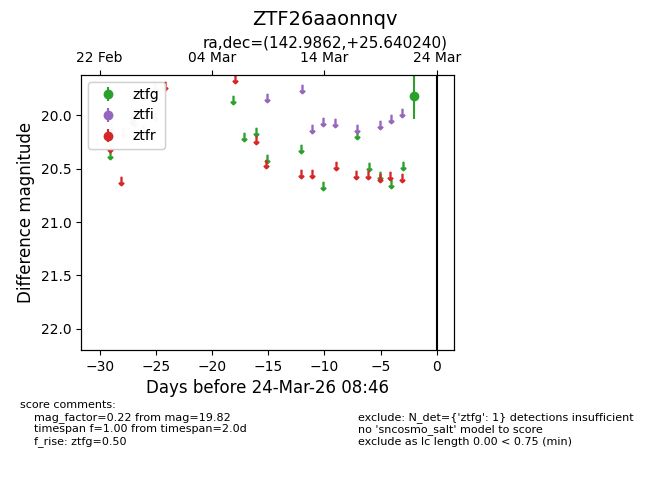
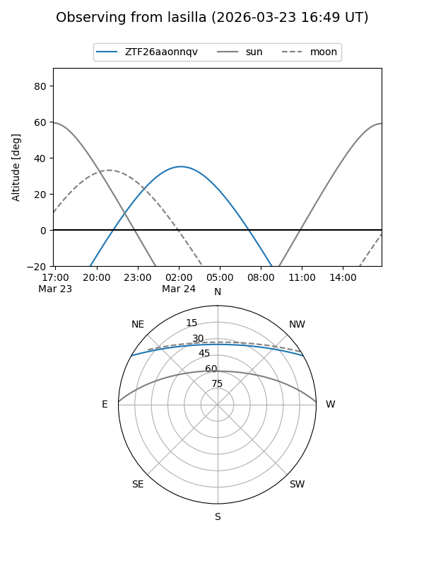
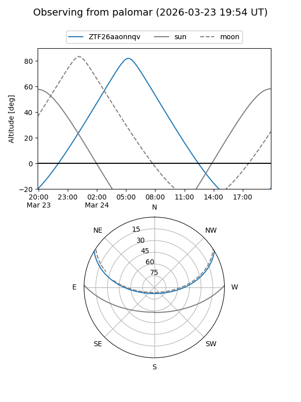

ZTF26aaonnqv
Target ZTF26aaonnqv at 2026-03-24 08:48
Aliases and brokers:
FINK: link
Lasair: link
ALeRCE: link
alt names
ZTF26aaonnqv (ztf,fink_ztf)
Coordinates:
equatorial (ra, dec) = 142.9862,+25.64024
equatorial (HMS+DMS) = 09:31:56.69,+25:38:24.86
galactic (l, b) = (203.0422,+45.59502)
Flags:
Photometry:
last ztfg=19.82
1 ztfg detections
Lightcurve

Visibility


Additional plots